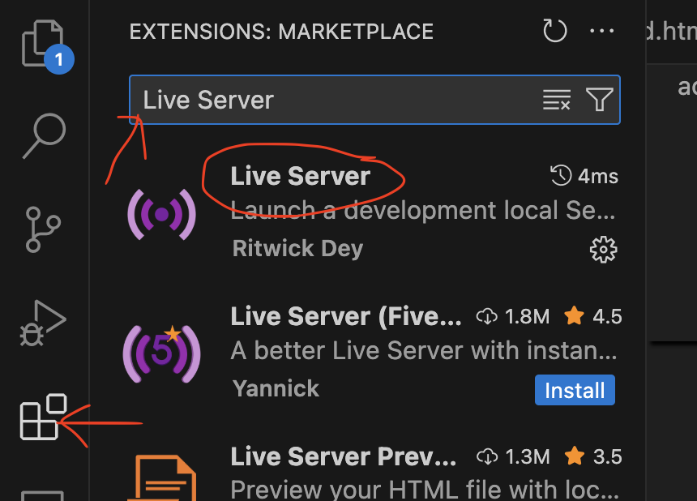

WEB Fundamentals
WDD 130
Editor Installation
Overview
- Task: Setup your code editor.
- Purpose: Efficient and effective app for editing your web page code.
Background
Browsers take HTML files and display them as web pages. You can create an HTML file in a simple plain text editor, but it is a much more enjoyable experience to use a smart editor. Some code editors include lots of helpful features that make writing HTML easier. Choose an editor that recognizes HTML code, helps you write code, and colors the code to make it easier to read.
The suggested code editor for this class is Visual Studio Code (VSCode).
Instructions
-
Install Visual Studio Code Editor
Go to the VSCode download website https://code.visualstudio.com/download
and download the appropriate file for your operating system (Windows, Mac, Linux).
Unpack and run the install file on your computer. -
Add Live Server Extension to VSCode
Once you have VSCode running on your computer, find the Extentions menu and then install the extention called Live Server by Ritwick Dey.

The Live Server extention will help you view your HTML files in a browser as you write the code.